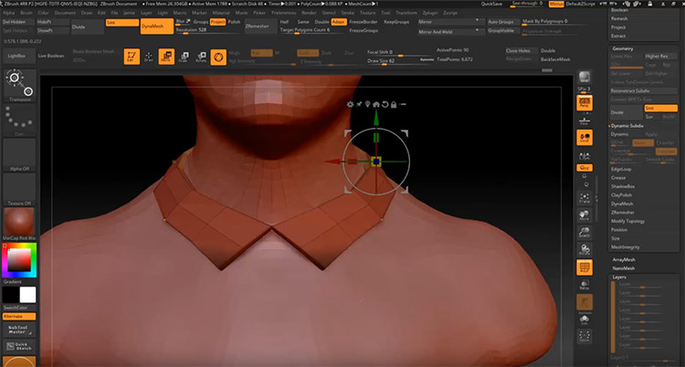

Hello fellow modeler, here you will learn the basic's of Z-brush. Like using the tools, where things are located and how stuff works and rendering. First of all, Z-brush is a advanced program used by experience 3d modelers in triple A titles, the program is advanced is pretty hard to use. But thats why I'm here, to guide and hold your hand through this painful program.
When you 1st load Z-brush I would recommend messing with existing models and test the tools. But once you have done this grab yourself a brush and start sculpting out a the base of your image so, using you brush start to use ball and sculpt it out to be whatever you want. Use some of the tools, like pull, push, squash, etc to neaten out your sculpture and fix any loose ends like over lapping or smoothen edges. Make something small for now and then extend on it later.
Next, what you want to do is extend and add some small details using some of the other brushes, there are some extensions you can grab that help with this some extensions are usually pay to get but some aren't(Do not try to pirate them, or you will lose your account and mess up your licence). Now once this is done and your happy with it start to add colour and blending colours(don't go too far blending because it can cause issues down the line)
